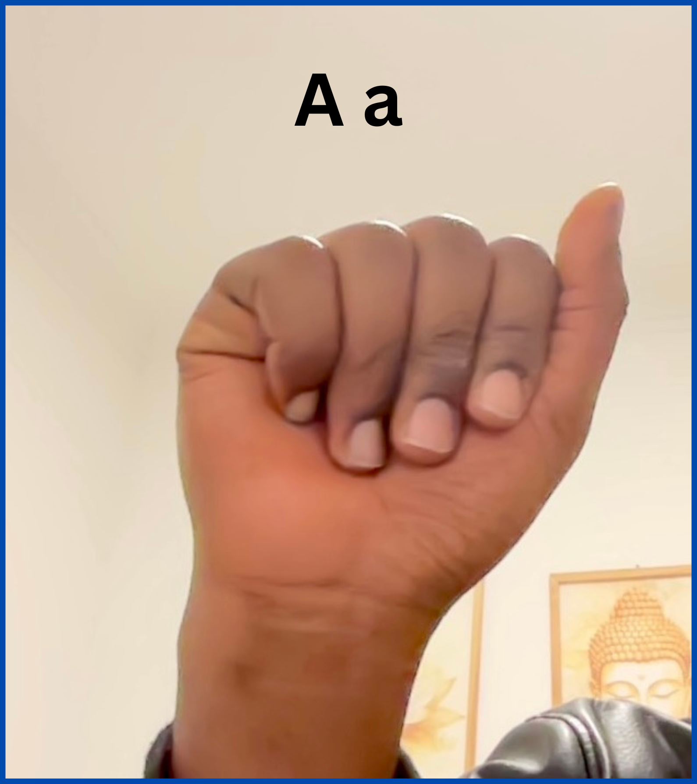
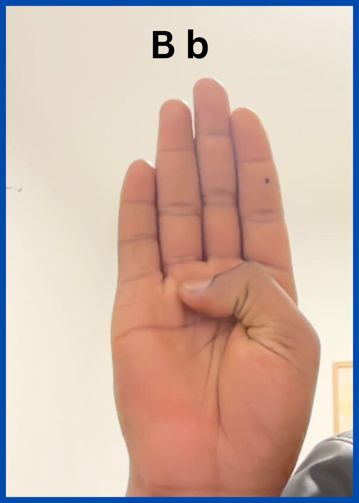
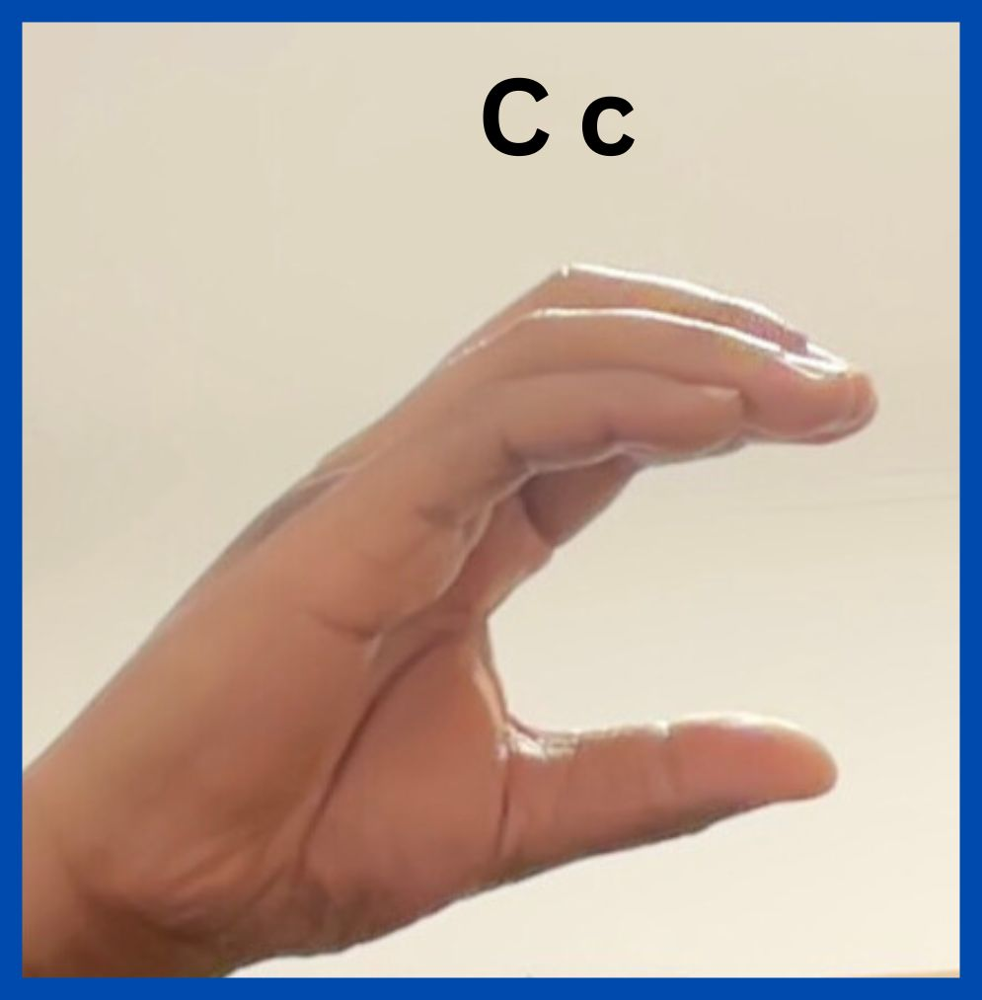
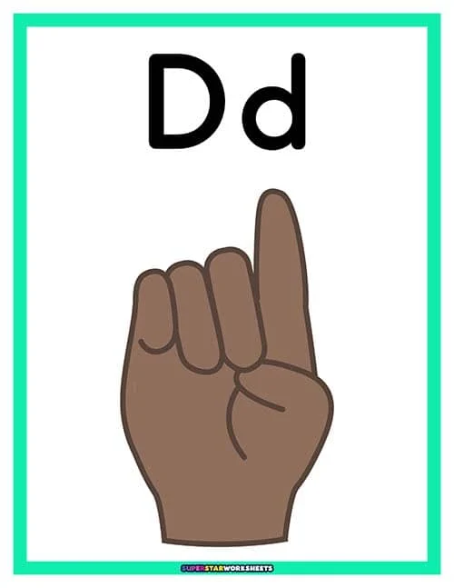
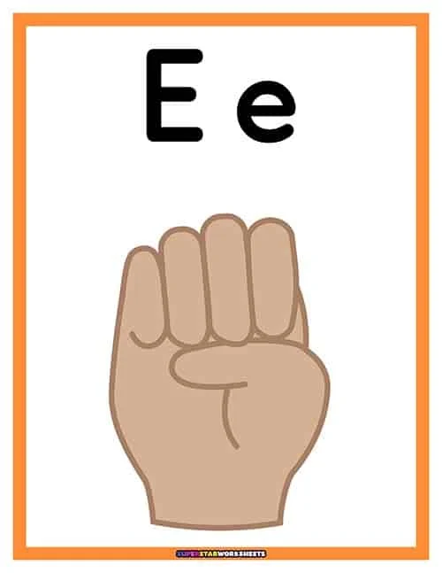
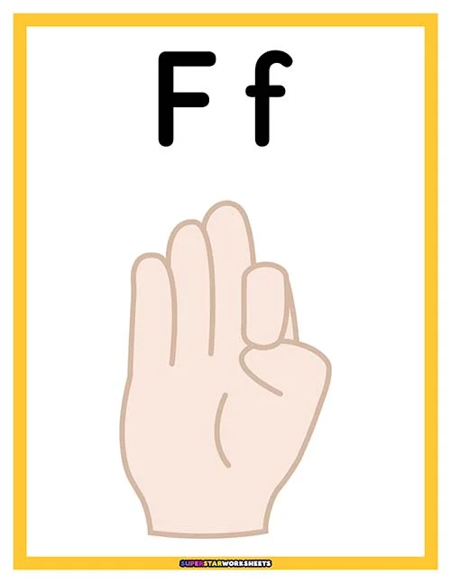
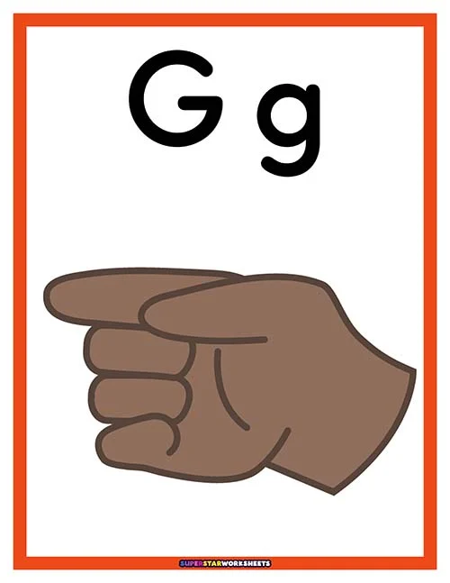
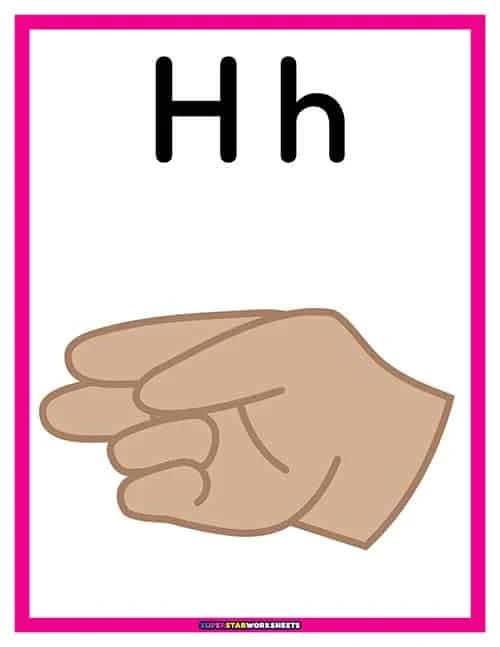

Aprender o Alfabeto em Língua de Sinais Moçambicana
Pratique os sinais do alfabeto LSM com feedback em tempo real utilizando uma câmara. Selecione uma letra para praticar o gesto correspondente.

Faça um punho com o polegar ao lado

Levante a mão com os dedos juntos e o polegar dobrado

Curve sua mão em forma de C

Dedo indicador para cima, outros dedos curvados

Enrole todos os dedos, mostre as pontas dos dedos

Conecte o polegar e o indicador, os outros dedos para cima

Aponte o dedo indicador para o lado, polegar reto

Indicador e dedo médio retos, outros fechados
Dedo mindinho levantado, outros fechados
Indicador e dedo médio para cima, polegar entre
O dedo indicador e o polegar formam um L
Três dedos sobre o polegar
Dois dedos sobre o polegar
Dedos curvados em forma de O
Aponte o dedo médio para baixo, com o indicador reto
Aponte o dedo indicador para baixo e o polegar para fora
Cruze os dedos indicador e médio
Feche o punho com o polegar sobre os dedos
Polegar entre o indicador e o dedo médio
Dedo indicador e dedo médio juntos
Dedo indicador e médio em forma de V
Dedo indicador, médio e anelar para cima
Dedo indicador em gancho, outros fechados
Polegar e mindinho estendidos
Área de pratíca
Gesticule em frente á camera